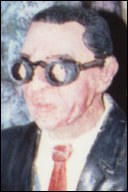
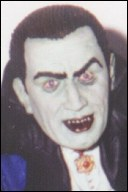
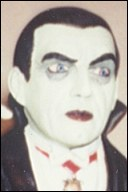

|
 |
 |
| Horizon (1988) | Billiken (1989) | Monstrology Models |
|  |  |  |
| Resin From The Grave | Mad Labs | Dimensional Designs |
Aurora models had the distinction of being the first to render Lugosi in plastic with their 1962 "long box" edition of Dracula. While the kit itself does not capture a great likeness of him, the incredible box art is all Lugosi. For any serious Lugosi fan this is a must have collectible. The second kit to feature a "loose" likeness of Bela was Aurora's Dracula's Dragster. This caricature kit was released in 1965. To a five year old boy this was definitely Bela Lugosi! Aurora did a final take on lugosi in 1971. This was the "MonsterScenes" Dracula released only in Canada. While this is the same kit Aurora released in 1975 in the "Monsters of the Movies" series, it features much better box art than its 1975 counterpart. This kit features the classic descending stairway pose taken from the movie.
Lugosi found his way to vinyl with Horizen's "Sci-fi Art" series in 1988. Sculpted by M. Kosada this was a fairly staightfoward take on dracula, which featured a nice likeness, but overall was a bit toy like. A good kit nonetheless. Billiken's 1989 version of dracula was a suberb kit. An elegant sculpture - this still stands as the definitive Lugosi Dracula piece.
Resin from the Grave released their exellent Randy Bowen Igor in 1991 marking Lugosi's entrance into the world of resin. This kit was sold alone initially, then with Frankenstein and diorama base by Joe Tomasini in 1992.
Monstrology Models was the first to render a bust of Bela with a 1/6 scale study of Lugosi from "The Ape Man". Sculpted by Jon Wang this piece was offered in cold cast bronze or porcelain.
One of the big dissapoinments in garage kit modeling came when Dark Horse failed to release Thomas kuntz' spectacular Dracula kit along with their other classic monsters. The recent good news is that Dark Horse plans to finally release the kit with the Lugosi Likeness. Rumor has it the Dracula title will be dropped and the kit will be released as "Bela Lugosi". An interesting and welcome twist of fate for Lugosiphiles. Intererstingly, Kuntz had planned to do a Lugosi piece several years back - portraying him as an old man in his post addiction years. Lugosi jr, understandably, had reservations about presenting his father in this way. Tom, respectfully, never completed the project. Pictures of the finished head can be seen in Artomics early catalogs.
Resin From The Grave continued the Lugosi madness with the release of the Devil Bat kit from the movie of the same name. This was an interesting Lugosi piece featuring two different lugosi heads and the huge devil bat itself. The kit was sculpted by David Grant and is perhaps his best work to date.
At least two super deformed kits have been done in Bela's honor. Mad Labs Bela Drac kit and Dimensional Designs Bela the Vampire by Randy Lambert. Both are exellent and worth checking out even if you're not particularly tickled by super deformeds.
With nearly 10 kits in his honor Lugosi must be viewed as one of the most popular horror subjects. Fortunately, more Lugosi kits are planned including Janus Companies eagerly awaited White Zombie piece by Tom Kuntz as well a life size bust by Cine Art - the same company that recently sculted an outstanding Karloff Frankenstein.
If I've overlooked any Lugosi kits please let us know what you've got. Let's fill in the time line and get pictures of all the kits.
One final thought - Lugosi Lives!
The Gremlins in the Garage webzine is a production of Firefly Design. If you have any questions or comments please get in touch.
Copyright © 1994-1997 Firefly Design.
{kind=link}
{kind=link}
{kind=link}